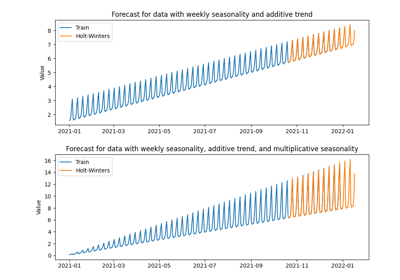

indsl
Toolboxes
Data Quality
Detect
Drilling
Equipment
Filter
Fluid Dynamics
Forecast
Numerical Calculus
Oil and Gas
Resample
Signals
Smooth
Statistics
Sustainability
Basic time series functions
Examples
Data quality
Detection Functions
Equipment Functions
Filter Functions
Forecasting Functions
Holt-Winters Predictor
Numerical Calculus
Oil and Gas Functions
Resampling Functions
Synthetic Signal Generation
Smoothing Functions
Statistics
Sustainability Functions
Function versioning
Developers
Contributing
Code of Conduct
Developer utility functions
Changelog
indsl
Forecasting Functions
View page source
Forecasting Functions
Examples of algorithms used to forecast data

Holt-Winters Predictor
Holt-Winters Predictor